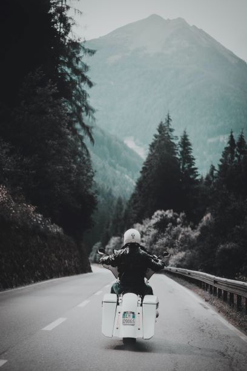
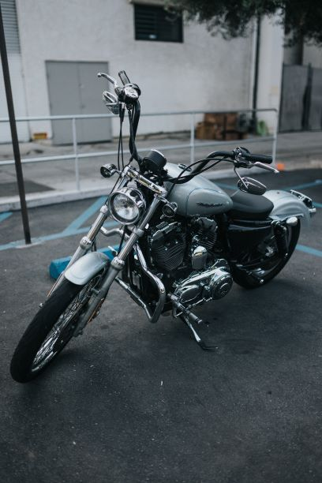
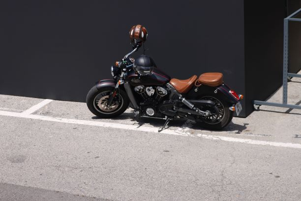
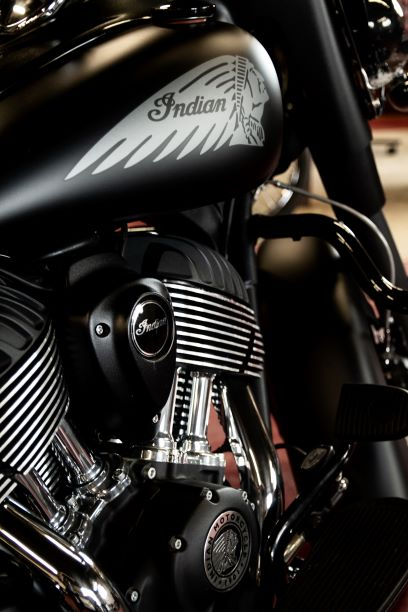
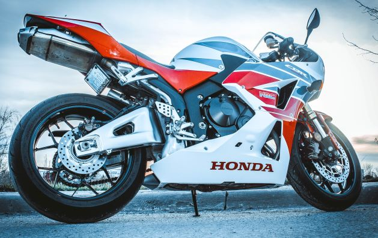
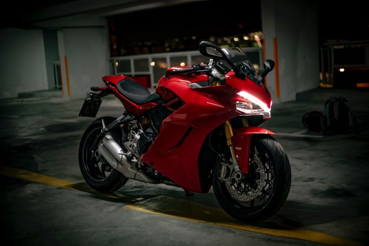
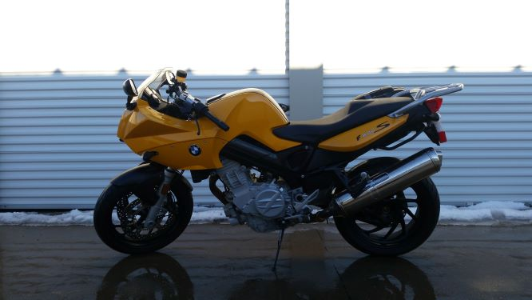
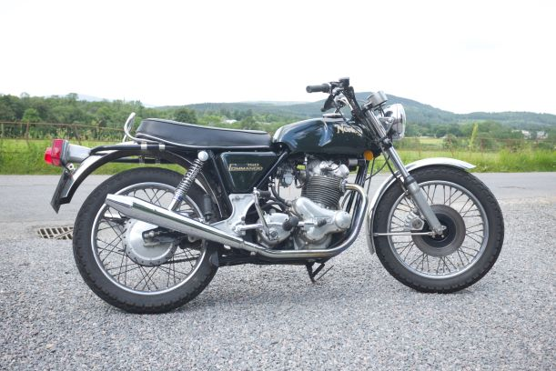
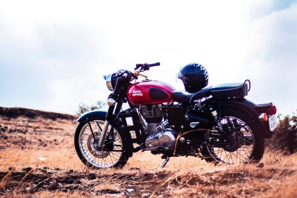
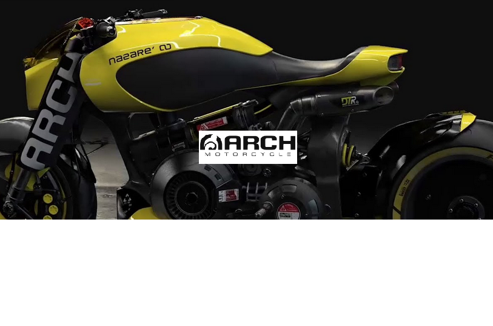

A Harley-Daivdson 'Glider' (mainly for long tours)
Harley-Davidson is the most famous motorcycle brand of all. It has been around since 1901 and was used in both world wars.

Another Harley-Davidson with an 'Americana look'.
You may enjoy viewing their current models here.

An Indian motorcycle
Indian's look is very similar to Harley-Davidson and is also loved for their 'Chopper' designs (seen as a true American look and often with an extended fork).
In the 20th century Indian had gone bankrupt for 30 years, but today it has regained its existence and keeps on selling motorcycles with a touch of the old 'Americana look'.
Take a look for yourself at Indian's website.

Another Indian bike, with a view on its v-twin engine
Another Indian Motorcycle, with the company logo on the tank.

Honda
After motorcycles gained popularity in Brittain and the USA, other countries started manufacturing them too.
In 1949, the post-war Japanese made the company Honda. They became particularly popular during the years of 'The Japanese Miracle' and continue to be a notable export product for Japan.
See Honda's line-up for yourself.
Yamaha
Yamaha is yet another example of iconic Japanese motorcycle manufacturers. Both Honda and Yamaha are particularly grand in modern racing history (they made a big name for themselves on the circuit in the 1990s and 2000s).
The brand Yamaha is also known for making musical instruments like piano's, audio interfaces and guitars. It's in fact a huge conglomerate known as the Yamaha Corporation (founded in 1887).
See the current line-up of Yamaha here.

Ducati
The best known Italian motorocycle brand is Ducati. It is owned by the famous supercar manufacturer Lamborghini.
Their current products can be found here here.

BMW
BMW is the first German motorcycle producer in this gallery.
BMW is best known for its car production (since 1916).
During World War II, BMW produced all sorts of war materials for the German cause. That's why some consumers have shied away from buying BMW's on principle.
Like Honda and Yamaha, BMW has a particularly respected name in motorracing history.
See the current line-up of BMW's motorcycles here.

Norton
Norton is a British motorcycle brand that's been around for some time: they started in 1898, but is not well known by the general public (non-motor enthusiasts) anymore... Norton used to be though, at the end of the 20th century.
There current models are found here.

Royal Enfield
Another brand from British soil is Royal Enfield. They too were founded long ago (in 1901). Unfortnately, the brand has seized to exist as of 1978. Some enthusiasts still know and love the brand regardless.

An Arch Motorcycle
A-class Hollywood actor Keanu Reeves created his instant-hit motorcycle brand 'Arch Motorcycles'.
The design of this cycle was used in the popular game 'CyberPunk 2077' (see next slide)
You may view Arch' current models here.
Discussion about Cyberpunk 2077
Keanu Reeves and his colleague describing the use of Arch Motorcycles in gaming.